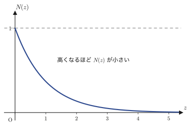
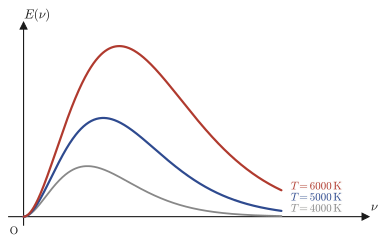
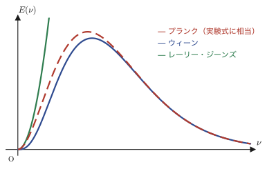
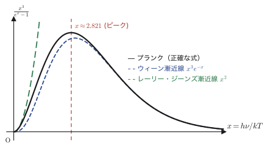

第49章統計力学と黒体放射 — ボルツマン分布とプランクの放射式
これまでの章では，波動方程式・熱伝導方程式・シュレーディンガー方程式といった具体的な偏微分方程式を，変数分離法で解いてきた．本章は少し毛色が違う．ここで主役になるのは偏微分方程式そのものではなく，むしろ指数関数 $e^{-E/kT}$ という，たった1つの式である．この式はボルツマン分布（Boltzmann distribution）と呼ばれ，「温度 $T$ で熱平衡にある系が，エネルギー $E$ の状態を実現する確率は $e^{-E/kT}$ に比例する」という，統計力学の中心にある法則を表している．気体分子1個の運動から，宇宙を満たす光（黒体放射）のエネルギー分布まで，驚くほど広い範囲の現象がこの1つの式から説明できる．
本章では，まず気体分子が重力の中でどう分布するか（山に登ると空気が薄くなるのはなぜか）という身近な問題からボルツマン分布を導入する．次に，19世紀末の物理学者たちが「空洞の中に閉じ込められた光（黒体放射）のエネルギーは振動数 $\nu$ にどう依存するか」という問題に取り組んだ歴史をたどる．驚くべきことに，19世紀の古典物理学（気体分子運動論と電磁気学）を組み合わせただけの理論（レーリー・ジーンズの法則）は，高振動数側で答えが無限大に発散するという致命的な欠陥（紫外破綻（ultraviolet catastrophe））を抱えていた．この矛盾を解消するために，マックス・プランク（Max Planck）は「光のエネルギーは連続な値ではなく，$h\nu$ を単位とする，とびとびの値（量子，quantum）でしかやり取りされない」という，当時としてはきわめて大胆な仮説（量子仮説（quantum hypothesis））を導入した．この仮説から導かれるプランクの輻射式（Planck's radiation law）こそが，20世紀の量子力学の出発点である．第45章〜第48章で扱ってきた「エネルギーの量子化」という考え方の，歴史的な原点がここにある．
本章のゴールは，ボルツマン分布から出発して，プランクの輻射式 $E(\nu)\,d\nu=\dfrac{8\pi\nu^2}{c^3}\cdot\dfrac{h\nu}{e^{h\nu/kT}-1}\,d\nu$ を，行間を一切飛ばさずに自分の手で導けるようになることである．この式の中身は，実は2つの独立な部品——「1個の光の定常波（モード）あたりの平均エネルギー」と「空洞の中にある定常波の数（状態密度）」——の掛け算に分解できる．本章の後半（49.4節・49.5節）では，この2つの部品をそれぞれ独立に導き，最後に掛け合わせてプランクの式を完全に組み立て直す．なお，本章の底本となったノートは，まさにこの状態密度を数えている途中，1つの数式を書きかけたところで（ページが尽きて）終わっている——本ノート全66ページの，文字通り最後の1行である．その先を，本章では自分の手で完成させる．
- ボルツマン分布 $N\propto e^{-E/kT}$ の意味と，気体分子の高度分布（気圧が高度とともに下がる理由）からの導出
- エネルギー等分配則から導かれるレーリー・ジーンズの法則と，それが高振動数で発散してしまう「紫外破綻」
- ウィーンによる古典論の補正（ウィーンの輻射式）と，それも低振動数側では実験と合わないこと
- プランクの輻射式が，レーリー・ジーンズとウィーンの両方を極限として含む「橋渡しの式」であること
- 量子仮説（エネルギーは $h\nu$ の整数倍でしかやり取りされない）から，1モードあたりの平均エネルギー $\dfrac{h\nu}{e^{h\nu/kT}-1}$ を導く計算技巧（パラメータについての微分で和を作る）
- 空洞の中に閉じ込められた定常波を「数え上げる」ことで，状態密度 $\rho(\nu)=8\pi\nu^2/c^3$ を導き，プランクの式を完全に組み立てる
- ノートの記述がどこで終わっているか，その続きをどう自分で完成させるか
もとにしたノート：望月泰英『数学ノート 偏微分方程式』 pp. 61–66（ノート全66ページの末尾）．
49.1 ボルツマン分布 ― 気体分子の高度分布
ノートは，前置きなしにいきなり次の式から始まる．
\begin{equation} e^{-\frac{E}{kT}} = e^{-\frac{N_0E}{RT}} \qquad (N_0：アボガドロ数) \label{eq:49-boltzmann-basic} \end{equation}見慣れない記号が並んでいるので，1つずつ確認しよう．$T$ は絶対温度（absolute temperature，単位ケルビン $\mathrm K$），$R$ は高校化学に出てきた気体定数（gas constant），$N_0$ はアボガドロ数（Avogadro's number，気体 $1\ \mathrm{mol}$ に含まれる分子の個数，約 $6.02\times10^{23}\ \mathrm{mol^{-1}}$）である．式 \eqref{eq:49-boltzmann-basic} は，$E/k=N_0E/R$ という主張だと考えれば，$k:=R/N_0$ という新しい定数を導入する式にほかならない（両辺を $E$（$\neq0$）で割ると $1/k=N_0/R$，すなわち $k=R/N_0$ となる）．この定数 $k$ に名前が付いている．
定義49.1 ボルツマン定数
\begin{equation} k := \frac{R}{N_0} \label{eq:49-k-def} \end{equation}で定義される定数 $k$ をボルツマン定数（Boltzmann constant）という．気体定数 $R$ が「気体 $1\ \mathrm{mol}$ あたり」の定数であるのに対し，$k=R/N_0$ は $1\ \mathrm{mol}$ あたりの量を分子の個数 $N_0$ で割った，気体分子1個あたりの定数である．現在の国際単位系（SI）では $k=1.380649\times10^{-23}\ \mathrm{J/K}$ と定義されている．
Explanation（ノート） 気体の熱運動によるエネルギー $E$ は，絶対温度 $T$ に比例する（$E\propto T$）．これは高校物理の気体分子運動論で学ぶとおりであり，比例定数をボルツマン定数 $k$ とおけば
\begin{equation} E = kT \qquad (k：ボルツマン定数) \label{eq:49-E-kT} \end{equation}と書ける．ここで $k=R/N_0$ が「気体分子 $1$ 個あたりの気体定数」と呼べることが，式 \eqref{eq:49-k-def} の意味である（気体定数 $R$ が $1\,\mathrm{mol}=N_0$ 個の分子ぶんの定数であることを思い出そう）．
さて，ここからノートは本題に入る——地球の重力圏にある気体分子は，高さによってどのように分布しているか，という問題である．高い山に登ると空気が薄くなる（酸素が足りなくなる）ことは経験的に知っているだろう．この現象を，力のつり合いと気体の状態方程式という，高校物理・化学の道具だけを使って定量的に導いてみよう．
49.1.1 円柱容器のモデルと力のつり合い
温度が一定であるとし，図49.1のようなモデルを考える．鉛直に立てた円柱形の容器（断面積 $S$）に気体を満たし，容器を高さ $z$ の水平な断面と，高さ $z+\Delta z$ の水平な断面で輪切りにする．気体分子1個の質量を $m$，高さ $z$ における気体分子の密度（個 $/\mathrm{m^3}$）を $N(z)$，圧力を $P(z)$ とおく．
高さ $z$ と $z+\Delta z$ の2つの断面にはさまれた，厚さ $\Delta z$・体積 $\Delta V=S\Delta z$ の薄い円板状の気体の層を考え，これに働く力のつり合いを考える．この層には，下から圧力 $P(z)$ による上向きの力 $P(z)S$，上から圧力 $P(z+\Delta z)$ による下向きの力 $P(z+\Delta z)S$，そして層に含まれる気体分子の重さによる下向きの力が働く．層に含まれる分子の個数は（密度）×（体積）$=N(z)\Delta V=N(z)S\Delta z$ だから，重さによる力は $mg\cdot N(z)S\Delta z$ である．この層が静止している（力がつり合っている）ことから，上向きの力と下向きの力が等しく，
$$ P(z)S = P(z+\Delta z)S + mg\,N(z)S\Delta z $$両辺を $S$ で割ると，ノートの①式が得られる．
\begin{equation} P(z) - P(z+\Delta z) = mg \cdot N(z) \cdot \frac{\Delta V}{S} = mg\, N(z) \cdot \Delta z \qquad \cdots ① \label{eq:49-force-balance} \end{equation}次に，この薄い層の中では気体は理想気体とみなせるとして，高校化学で学んだ気体の状態方程式（ideal gas law） $PV=nRT$ を使う．ここでは「モル数 $n$」の代わりに「分子の個数」で書き直したいので，$1\,\mathrm{mol}$ あたりの式を分子1個あたりに直した形——気体分子の密度 $N(z)$（個 $/\mathrm{m^3}$）と，ボルツマン定数 $k=R/N_0$（定義49.1）を使う形——で書く．体積 $V$ の中に密度 $N(z)$ で分子が詰まっているとき，状態方程式は
$$ P(z)\cdot V = N(z)\,V\cdot kT $$となる（高校化学の $PV=nRT$ で，$n$ を「体積 $V$ 中の分子数 $N(z)V$ を $N_0$ で割ったモル数」，$R$ を $R=kN_0$ と書き直して整理すると，ちょうどこの形になる）．両辺を体積 $V$ で割ると，ノートの②式が得られる．
\begin{equation} \therefore\ P(z) = N(z)\,kT \qquad \cdots ② \label{eq:49-state-eq} \end{equation}49.1.2 微分方程式にする
①式の左辺 $P(z)-P(z+\Delta z)$ を，導関数の定義を使って書き直そう．導関数の定義（第1章）より
$$ \lim_{\Delta z\to 0}\frac{P(z+\Delta z)-P(z)}{\Delta z} = \frac{dP(z)}{dz} $$である．左辺の分数の符号を逆にすれば $P(z)-P(z+\Delta z)$ の形になるから，$\Delta z$ が小さいとき，近似的に
$$ P(z) - P(z+\Delta z) \fallingdotseq -\frac{dP(z)}{dz}\cdot \Delta z $$と表せる（記号 $\fallingdotseq$ は「近似的に等しい」という意味．$\Delta z\to0$ の極限で，この近似は等号になる）．なぜマイナス符号が付くのか確認しておこう——導関数の定義の分数は $\dfrac{P(z+\Delta z)-P(z)}{\Delta z}$ であり，これに $\Delta z$ を掛ければ $P(z+\Delta z)-P(z)\fallingdotseq \dfrac{dP}{dz}\Delta z$ となる．欲しいのはこの符号を反転した $P(z)-P(z+\Delta z)$ なので，右辺にもマイナスを付ける．
これを①式に代入する．
$$ mg\cdot N(z)\cdot \Delta z = -\frac{dP(z)}{dz}\cdot \Delta z $$両辺を $\Delta z$（$\neq0$）で割れば，
$$ mg\,N(z) = -\frac{dP(z)}{dz} $$という関係が得られる．ここに②式 $P(z)=N(z)kT$ を代入し，$dP/dz=kT\cdot dN/dz$（$k,T$ は定数だから，微分の外に出せる）を使うと，ノートの結論の1歩手前の式が得られる．
$$ mg\, N(z) = -kT\cdot \frac{dN(z)}{dz} $$49.1.3 変数分離法で解く
これは $N(z)$ についての1階の微分方程式であり，右辺と左辺で $N$ と $dN/dz$ を整理すると，変数分離形（第33章）になる．両辺を $N(z)kT$ で割ると，
$$ -\frac{mg}{kT} = \frac{1}{N}\frac{dN}{dz} \qquad\text{すなわち}\qquad -\frac{mg}{kT}dz = \frac{1}{N}dN $$という，$z$ だけを含む項と $N$ だけを含む項に分離された形になる．両辺を積分すると（左辺は $z$ について，右辺は $N$ について，それぞれ不定積分を取る），
$$ -\frac{mg}{kT}z + C_1 = \ln|N| = \ln N $$（気体分子の密度 $N$ は正の値なので絶対値ははずせる．$C_1$ は積分定数．）両辺を $e$ の指数に乗せると，$N=e^{-\frac{mg}{kT}z+C_1}=e^{C_1}\cdot e^{-\frac{mg}{kT}z}$ となる．ここで $C:=e^{C_1}$ という新しい定数（積分定数を指数に乗せ換えたもの，$z=0$ での密度 $N(0)$ に等しい）とおけば，ノートの結論に到達する．
定理49.1 気体分子の高度分布（バロメトリック公式）
温度 $T$ で熱平衡にある気体について，重力 $mg$（$m$：分子1個の質量）のもとでの，高さ $z$ における気体分子の密度 $N(z)$ は次の指数関数で与えられる．
\begin{equation} N(z) = Ce^{-\frac{mgz}{kT}} \label{eq:49-density-general} \end{equation}（$C=N(0)$ は $z=0$ での密度．）高さが増すにつれて密度は指数関数的に減少する．
この結果はノート左欄外にも清書されており，本文の計算全体の左横に，$N(z)$ を縦軸，$z$ を横軸とするグラフが描かれている（図49.2）．「高くなるほど $N(z)$ が小さい」という注記が添えられている．

49.1.4 一般化 ― ボルツマン分布
ここでノートは，この結果を一気に一般化する．$mgz$ は，高さ $z$ にある分子1個分の位置エネルギー（重力ポテンシャルエネルギー）にほかならない．そこで，これを一般のエネルギー $E(z)$ に置き換えてもよい，というのがノートの主張である．
\begin{equation} \therefore\ N(z) = Ce^{-\frac{E(z)}{kT}} \label{eq:49-density-energy} \end{equation}そしてノートは最後にもう一段抽象化し，この式が特定の物理系（重力中の気体分子）に限らない，一般的な法則であると述べる——「絶対温度 $T$ で平衡状態にある系が，エネルギー $E$ の状態を有する確率」は，$e^{-E/kT}$ に比例するというのである．この一般化された主張が，統計力学で最も基本的な法則の1つである．
定義49.2 ボルツマン分布
絶対温度 $T$ で熱平衡にある系が，エネルギー $E$ の状態を実現する確率 $P(E)$ は，$E$ に依存する部分について
\begin{equation} P(E) \propto e^{-\frac{E}{kT}} \label{eq:49-boltzmann-dist} \end{equation}という比例関係を満たす．これをボルツマン分布（Boltzmann distribution）という．気体分子の高度分布（定理49.1）は，$E(z)=mgz$ の場合の具体例にあたる．
イメージ：なぜ「エネルギーが高い状態」は実現しにくいのか
式 \eqref{eq:49-boltzmann-dist} は，$E$ が大きいほど $e^{-E/kT}$ が小さくなる（$E\to\infty$ で $0$ に近づく）ことを主張している．直観的に言えば，「エネルギーの高い状態を実現するのは，統計的に損である」ということである．気体分子の場合で考えると，分子が高い場所（位置エネルギーが高い場所）にいるためには，重力に逆らって仕事をする必要があり，そのぶん存在確率が下がる．一方，温度 $T$ が高いほど（分母の $kT$ が大きいほど）指数関数の減衰は緩やかになる——熱運動が活発なほど，高いエネルギーの状態にも分子が届きやすくなる，という直観と一致している．この「エネルギーが高いほど不利，温度が高いほど有利」というせめぎ合いが，$e^{-E/kT}$ という1つの式に凝縮されている．次節以降では，この同じ式が，気体分子だけでなく光（電磁波）のエネルギー分布にもそのまま使えることを見る．
例題49.1 高度1万mでの空気の密度
地表（$z=0$）での気温を $T=288\ \mathrm K$（$15\,{}^\circ\mathrm C$，標準大気の海面温度）で一定と近似し，空気の平均分子量を $28.97\ \mathrm{g/mol}$（窒素 $78\%$ ・酸素 $21\%$ などの平均）とする．旅客機の巡航高度に近い高度 $z=1.0\times10^4\ \mathrm m$（$1$万m）における空気の密度 $N(z)$ は，地表の密度 $N(0)$ の何倍か．重力加速度は $g=9.8\ \mathrm{m/s^2}$ とする．
解答 分子1個あたりの質量は，平均分子量 $M=28.97\ \mathrm{g/mol}=28.97\times10^{-3}\ \mathrm{kg/mol}$ をアボガドロ数 $N_0=6.022\times10^{23}\ \mathrm{mol^{-1}}$ で割って，
$$ m=\frac{M}{N_0}=\frac{28.97\times10^{-3}}{6.022\times10^{23}}\ \mathrm{kg}\approx4.811\times10^{-26}\ \mathrm{kg} $$定理49.1（式 \eqref{eq:49-density-general}）より $N(z)/N(0)=e^{-mgz/kT}$ である．指数の絶対値を計算すると，
$$ \frac{mgz}{kT}=\frac{(4.811\times10^{-26})\times9.8\times(1.0\times10^4)}{(1.381\times10^{-23})\times288}\approx1.186 $$したがって
$$ \frac{N(10^4\,\mathrm m)}{N(0)}=e^{-1.186}\approx0.306 $$すなわち，高度1万mでの空気の密度は，地表のおよそ$31\%$まで下がる（数値はsympy/numpyで検算済み——本章末の検算スクリプトを参照）．旅客機の客室が与圧されている理由が，この計算からも実感できる．
49.2 レーリー・ジーンズの法則とウィーンの輻射式
ここからノートの話題は，気体分子から光（電磁波）へと移る．舞台となるのは，内側が完全に不透明な壁で囲まれた空洞（内部は真空）である．こうした空洞の壁をわずかに温めると，壁は電磁波（光）を放出し，空洞の中には様々な振動数 $\nu$（ニュー，nu．波が1秒間に振動する回数．単位は $\mathrm{Hz}$）の電磁波が満ちる．これを空洞放射（cavity radiation）あるいは黒体放射（black-body radiation）という．目標は，振動数 $\nu$ から $\nu+d\nu$ の間にある電磁波が運ぶエネルギー $E(\nu)\,d\nu$（単位体積あたり）を求めることである．
49.2.1 エネルギー等分配則
Explanation（ノート） 気体分子の場合，統計力学には次の法則がある——熱平衡にある系のエネルギーは，運動の自由度（独立に動ける方向の数）ごとに，平等に $\dfrac12kT$ ずつ割り当てられる．これをエネルギー等分配則（equipartition theorem）という．例えば3次元空間を自由に動き回る気体分子1個は，$x,y,z$ の3方向の運動エネルギーという3つの自由度を持つので，平均の運動エネルギーは $3\times\dfrac12kT=\dfrac32kT$ になる（この結果自体は本章では使わないが，気体分子運動論で馴染みのある人も多いだろう）．
ここでノートは，この等分配則を空洞の中の光（電磁波の定常波）に適用する．3次元空間における定常波（standing wave，空洞の壁で反射を繰り返して，時間的に振動しながらも波形の節の位置が動かない波）は，時間については単振動（$\cos\omega t$ の形で振動）する——これは，バネにつながれた質点（力学的な1次元調和振動子）の変位が単振動するのと，数学的にまったく同じ構造である．力学の調和振動子のエネルギーは，運動エネルギー（速度の2乗に比例する項）と位置エネルギー（変位の2乗に比例する項）という，独立な2つの2次形式の和で書けたことを思い出そう．電磁波の1つの定常波（偏光の向き，つまり電場が振動する方向もすでに1つに定まっているものとする）についても，まったく同様に，電場のエネルギー（電場の大きさの2乗に比例する量）と磁場のエネルギー（磁場の大きさの2乗に比例する量）という，独立な2つの2次形式の和としてエネルギーを書くことができる（この章では記号 $E$ をエネルギーの意味で使っているので，電場・磁場を表す記号はここでは導入しない）——これが，力学の調和振動子における運動エネルギー・位置エネルギーに対応する．等分配則は，エネルギーの式に現れる独立な2次形式の項の数だけ $\dfrac12kT$ を割り当てる法則だから，電場・磁場という2つの2次形式を持つ1つの定常波（モード）には，等分配則により
$$ 2\cdot\frac{1}{2}kT = kT $$だけのエネルギーが割り当てられる．
ここで念のため注意しておこう——電磁波には，これとは別に，進行方向に垂直な2つの独立な振動方向（偏光，polarization）という自由度もある．しかし，これは「1つのモードが持つエネルギーがなぜ $kT$ になるか」という今の議論とは無関係で，「空洞の中に，振動数 $\nu$ 付近のモードがいくつあるか」を数え上げる際に効いてくる，別の要素である（49.5.2項で扱う）．今の段階（1つのモードあたりのエネルギーの計算）では，偏光の自由度はまだ使わない——電場・磁場という2つの2次形式こそが，1モードが $kT$ を持つ理由である．
49.2.2 レーリー・ジーンズの法則
さて，振動数 $\nu$ から $\nu+d\nu$ の間にある定常波（モード）の数を，単位体積あたり $\rho(\nu)\,d\nu$ 個としよう（$\rho(\nu)$ を状態密度（density of states）という．この $\rho(\nu)$ そのものをどう計算するかは，49.5節で改めて詳しく扱う．ここではひとまず「$\rho(\nu)=8\pi\nu^2/c^3$ という形の式である」という結果だけを認めて先に進もう）．すると，空洞の中に定常的に存在する光のエネルギーは，「モード1個あたりのエネルギー $kT$」と「モードの数 $\rho(\nu)\,d\nu$」の積として，
$$ E(\nu)\,d\nu = \rho(\nu)\cdot kT\cdot d\nu = \frac{8\pi}{c^3}\nu^2\cdot kT\, d\nu $$という分布になるはずである．ここで $c$ は光速（$c\approx2.998\times10^8\,\mathrm{m/s}$）である．この式を，19世紀末にレイリー卿とジーンズが古典電磁気学と気体分子運動論だけから導いたことにちなんで，次のように呼ぶ．
公式49.1 レーリー・ジーンズの法則
\begin{equation} E(\nu)\,d\nu = \rho(\nu)\cdot \boxed{kT}\cdot d\nu = \frac{8\pi}{c^3}\nu^2\cdot \boxed{kT}\, d\nu \label{eq:49-rayleigh-jeans} \end{equation}注意：しかし，実験とまったく合わない！
ところが，この式は左の図（測定される実際のスペクトル）の分布と異なる式である（図49.3）．実測される黒体放射のスペクトルは，$\nu=0$ から立ち上がったあと山なりのピークを作り，高振動数側では減衰していく（釣鐘型）．ところが公式49.1は $E(\nu)\propto\nu^2$ という，$\nu$ が大きくなるほど際限なく増え続ける（発散する）関数である．なぜこのような食い違いが起きるのか——なぜなら，光のエネルギーの場合，等分配できないからである（等分配則は，気体分子のような「粒子」の運動エネルギーには成り立つが，光のエネルギーにそのまま適用してよい保証はどこにもなかった，ということが後にわかる）．

そこで，オーストリアの物理学者ウィーン（Wien）が，この不一致を解消するために式を変えることを試みた．
49.2.3 ウィーンの輻射式
Explanation（ノート） 古典的な，エネルギーの等分配則が（光には）通じない．そこで，光のエネルギーが $E=h\nu$ で表されること（$h$ はプランク定数（Planck constant），$h\approx6.626\times10^{-34}\ \mathrm{J\,s}$．光は $h\nu$ を単位とする粒（のちに光子と呼ばれる）としてもエネルギーをやり取りできる，という考え方が背景にある）と，ボルツマン分布（定義49.2）から，エネルギー $E$ を有する粒子の数は $e^{-E/kT}$ という因子に比例することを用いて，ウィーンは波の平均エネルギーを
$$ h\nu\cdot e^{-\frac{h\nu}{kT}} $$に補正した．つまり，公式49.1で使った「モード1個あたりのエネルギー $kT$」を，次のように置き換えるのである．
\begin{equation} kT \ \longrightarrow\ h\nu\cdot e^{-\frac{h\nu}{kT}} \label{eq:49-wien-substitution} \end{equation}この置き換えを公式49.1に施すと，次の式が得られる．
公式49.2 ウィーンの輻射式
\begin{equation} E(\nu)\,d\nu = \frac{8\pi}{c^3}\nu^2\cdot h\nu\cdot \boxed{e^{-\frac{h\nu}{kT}}}\,d\nu \label{eq:49-wien} \end{equation}イメージ：ウィーンの式はどこがよくなったか
公式49.1（レーリー・ジーンズ）は $\nu^2$ に比例するので $\nu\to\infty$ で発散したが，公式49.2（ウィーン）は $\nu^2\cdot h\nu\cdot e^{-h\nu/kT}=h\nu^3e^{-h\nu/kT}$ という形になっている．指数関数 $e^{-h\nu/kT}$ は，$\nu\to\infty$ のとき，どんな整数乗の $\nu^n$ よりも速く $0$ に近づく（第4章のテイラー展開や，指数関数の増大の速さに関する一般的な事実である）．したがって，ウィーンの式は高振動数側でちゃんと $0$ に減衰し，実測のスペクトルの「山型」の右半分（減衰する部分）をうまく再現できる．しかし——次節で見るように——低振動数側では，今度は逆の問題が生じる．
例題49.2 可視光で $h\nu/kT$ の大きさを見積もる
可視光の振動数をおよそ $\nu=5\times10^{14}\ \mathrm{Hz}$（波長ではおよそ $600\ \mathrm{nm}$，橙色付近）とする．室温 $T=300\ \mathrm K$ において，$h\nu/kT$ の値を見積もれ．この値の大小は何を意味するか．
解答 $h=6.626\times10^{-34}\ \mathrm{J\,s}$，$k=1.381\times10^{-23}\ \mathrm{J/K}$ を用いる．
$$ h\nu = (6.626\times10^{-34})\times(5\times10^{14}) \approx 3.313\times10^{-19}\ \mathrm J $$ $$ kT = (1.381\times10^{-23})\times300 \approx 4.142\times10^{-21}\ \mathrm J $$ $$ \frac{h\nu}{kT}\approx\frac{3.313\times10^{-19}}{4.142\times10^{-21}}\approx80 $$（sympy/numpyで検算済み）．$h\nu/kT\approx80\gg1$ という結果は，「室温の熱エネルギー $kT$ に比べて，可視光の光子1個分のエネルギー $h\nu$ はずっと大きい」ことを意味する．これは，室温では可視光の量子（光子）1個をやり取りするだけの熱エネルギーがまったく足りないことを意味しており，量子効果（エネルギーがとびとびであること）が無視できない理由がここにある——もし $h\nu\ll kT$ であれば，エネルギーの単位 $h\nu$ は熱のゆらぎに比べて非常に細かく，実質的に連続とみなせて古典論（レーリー・ジーンズ）でよく近似できただろう．
例題49.3 レーリー・ジーンズの式は積分すると発散する（紫外破綻）
公式49.1（レーリー・ジーンズの法則）に従うとして，全振動数にわたる全エネルギー $\displaystyle\int_0^\infty E(\nu)\,d\nu$ を計算するとどうなるか．物理的に何が問題か説明せよ．
解答 公式49.1で $C_1:=8\pi kT/c^3$（$\nu$ によらない定数）とおくと $E(\nu)=C_1\nu^2$ である．有限の上限 $\nu_{\max}$ までの積分は
$$ \int_0^{\nu_{\max}} C_1\nu^2\,d\nu = \frac{C_1}{3}\nu_{\max}^3 $$であり，$\nu_{\max}\to\infty$ とすると，この値は際限なく大きくなる（sympyでも $\displaystyle\int_0^\infty C_1\nu^2\,d\nu=\infty$ と確認できる）．つまり，レーリー・ジーンズの法則に従うならば，空洞の中の光は無限大のエネルギーを持つことになってしまう．これは明らかに物理的におかしい（有限温度の物体が無限大のエネルギーを放射するはずがない）．しかもこの発散は，波長の短い（振動数の高い）電磁波，つまり紫外線からさらに短波長側で起きることから，歴史的に紫外破綻（ultraviolet catastrophe）と呼ばれている．この矛盾こそが，次節でプランクが新しい仮説を必要とした理由である．
49.3 プランクの輻射式とその2つの極限
公式49.1（レーリー・ジーンズ）は低振動数側でよく実測と合うが高振動数側で発散し，公式49.2（ウィーン）は高振動数側でよく合うが，実は低振動数側でずれる（これは演習49.2・演習49.3で数値的・式変形の両面から確認する）．プランク（Planck）は，この両方をうまく表せるように，ウィーンの式を少しだけ変えることを考えた．
定理49.2 プランクの輻射式
\begin{equation} E(\nu)\,d\nu = \frac{8\pi\nu^2}{c^3}\cdot\frac{h\nu}{e^{\frac{h\nu}{kT}}\boxed{-1}}\,d\nu \label{eq:49-planck} \end{equation}Explanation（ノート） $\nu$ が小さい（低振動数）とき，レーリー・ジーンズの式がよく実測を表していて，$\nu$ が大きい（高振動数）とき，ウィーンの式がよく実験曲線とほぼ一致する．プランクはこの両方を表せるように，ウィーンの式（公式49.2）を少し変えた．その式が式 \eqref{eq:49-planck}である．ウィーンの式の分母にあった $1$（すなわち，指数関数 $e^{h\nu/kT}$ そのもの）を，$e^{h\nu/kT}-1$ という形に変えただけである．たったこれだけの変更で，2つの極限がどちらも正しく再現されることを，以下で確認しよう．
Remember!!（ノート欄外）
レーリー・ジーンズの式およびウィーンの式は，古典電磁気学から導かれた．しかし，プランクの式は，量子仮説から導かれる．
この欄外の注記は，本章の歴史的な位置づけをひとことでまとめている——レーリー・ジーンズとウィーンの式は，あくまで「エネルギーは連続な値を取れる」という古典物理学の枠内での工夫だった．一方，プランクの式（定理49.2）は，49.4節で見るとおり，「エネルギーは $h\nu$ を単位とするとびとびの値でしかやり取りされない」という量子仮説（quantum hypothesis）を根拠に導かれる，まったく新しい種類の式である．
49.3.1 高振動数極限 ― ウィーンの式との一致
(i) 高振動数であるとき，$\nu$ は大きいので，$\dfrac{h\nu}{kT}$ も大きい．すると，このとき，指数関数 $e^{h\nu/kT}$ 自身が $1$ に比べて圧倒的に大きくなるので，分母の $-1$ は無視できるほど小さくなる．
$$ \frac{1}{e^{\frac{h\nu}{kT}}-1} \fallingdotseq \frac{1}{e^{\frac{h\nu}{kT}}} $$（例えば $h\nu/kT=10$ なら $e^{10}\approx22026$ であり，これに比べて $1$ は無視してよいほど小さいことがわかる．）これを定理49.2の式 \eqref{eq:49-planck}に代入すると，
$$ E(\nu)\,d\nu \fallingdotseq \frac{8\pi\nu^2}{c^3}\cdot\frac{h\nu}{e^{\frac{h\nu}{kT}}}\,d\nu $$となる．これは，$1/e^{h\nu/kT}=e^{-h\nu/kT}$ と書き直せば，公式49.2（ウィーンの式）とまったく同じ形である．すなわち，高振動数極限でプランクの式はウィーンの式に一致する．
49.3.2 低振動数極限 ― レーリー・ジーンズの式との一致
(ii) 低振動数であるとき，$\nu$ は小さいので，$\dfrac{h\nu}{kT}$ も小さい．このとき，指数関数の1次近似（第4章のテイラー展開，あるいは高校数学で学ぶ $e^x\approx1+x$（$x$ が $0$ に近いとき）そのもの）を使うと，
$$ e^{\frac{h\nu}{kT}} \fallingdotseq 1+\frac{h\nu}{kT} $$である．したがって分母は
$$ e^{\frac{h\nu}{kT}}-1 \fallingdotseq \frac{h\nu}{kT} $$となる．これを式 \eqref{eq:49-planck}に代入すると，
$$ E(\nu)\,d\nu \fallingdotseq \frac{8\pi\nu^2}{c^3}\cdot\frac{h\nu}{h\nu/kT}\,d\nu = \frac{8\pi\nu^2}{c^3}\cdot kT\,d\nu $$となる（分子・分母の $h\nu$ が約分されて消えることに注意）．これは公式49.1（レーリー・ジーンズの法則）とまったく同じ式である．すなわち，低振動数極限でプランクの式はレーリー・ジーンズの式に一致する．
物理的意味：プランクの式は「橋渡しの式」である
以上の2つの極限（49.3.1項・49.3.2項）から，プランクの式（定理49.2）は，低振動数でレーリー・ジーンズの式（成功していた側）に，高振動数でウィーンの式（成功していた側）に，それぞれなめらかに一致する「橋渡しの式」であることがわかる．しかも，レーリー・ジーンズの式が抱えていた「$\nu\to\infty$ での発散」（紫外破綻，例題49.3）は，分母の $e^{h\nu/kT}$ が指数関数的に大きくなることで自動的に解消される——プランクの式を全振動数で積分した全エネルギーは，有限の値になる（この計算は，ウィーンの式についての演習49.5で確認する類似の積分と本質的に同じ手法で示せる）．たった1か所，分母に $-1$ を加えただけで，これほど多くの問題が一挙に解決されたことが，プランクの式の驚くべき点である．

例題49.4 プランクの式のピーク振動数（振動数版のウィーンの変位則）
プランクの式（定理49.2）を，$x:=h\nu/kT$ という無次元の変数で書き直すと，$E(\nu)\propto \dfrac{x^3}{e^x-1}$ という形になる（確かめよ）．この関数が最大値を取る $x$ の値（ピークの位置）を求める方程式を書き，数値的に解け．
解答 まず，$x=h\nu/kT$ とおくと $\nu=kTx/h$ であり，定理49.2の $E(\nu)$ に含まれる $\nu$ 依存性は $\nu^2\times\dfrac{h\nu}{e^{h\nu/kT}-1}=h\nu^3\cdot\dfrac{1}{e^{h\nu/kT}-1}$ の部分だから，$\nu^3\propto x^3$，$e^{h\nu/kT}-1=e^x-1$ より，確かに $E(\nu)\propto \dfrac{x^3}{e^x-1}=:f(x)$ の形になる．
$f(x)$ の極大点では $f'(x)=0$ である．商の微分公式（第3章）を使うと，
$$ f'(x)=\frac{3x^2(e^x-1)-x^3e^x}{(e^x-1)^2} $$であり，分子を整理すると
$$ 3x^2(e^x-1)-x^3e^x=x^2\bigl\{3(e^x-1)-xe^x\bigr\}=x^2\bigl\{(3-x)e^x-3\bigr\} $$となる．$x\gt0$ では $x^2\neq0$ なので，$f'(x)=0$ となるのは
\begin{equation} (3-x)e^x-3=0 \qquad\text{すなわち}\qquad (3-x)e^x=3 \label{eq:49-wien-displacement} \end{equation}のときである．これは $x$ について解析的に（初等関数で）解くことができない超越方程式（transcendental equation）なので，数値的に解く．sympyの数値解法（ニュートン法）を用いると，
$$ x_{\text{peak}}\approx2.821 $$という解が得られる（$f''(x_{\text{peak}})\lt0$ となることも確認済みで，これは極大点である）．したがって，プランクの式（振動数の関数として見たとき）のピークは $h\nu_{\text{peak}}/kT\approx2.821$，すなわち
$$ \nu_{\text{peak}}\approx2.821\,\frac{kT}{h} $$で起こる．例えば太陽の光球面の温度 $T\approx5778\ \mathrm K$ を代入すると $\nu_{\text{peak}}\approx3.40\times10^{14}\ \mathrm{Hz}$（波長に直すと $c/\nu_{\text{peak}}\approx883\ \mathrm{nm}$，近赤外線）となる．よく知られている「波長で表したウィーンの変位則」$\lambda_{\text{peak}}T\approx2.898\times10^{-3}\ \mathrm{m\,K}$ を使うと，太陽の $\lambda_{\text{peak}}\approx502\ \mathrm{nm}$（緑〜青，可視光線）となり，振動数で最大になる点と，波長で最大になる点は一致しないことがわかる（sympy/numpyで検算済み）．これは，$E(\nu)\,d\nu$ と $E(\lambda)\,d\lambda$ が同じ物理量（単位体積・単位振動数（波長）あたりのエネルギー）を表していても，$\nu=c/\lambda$ という変数変換に伴うヤコビアン（$d\nu=-\dfrac{c}{\lambda^2}d\lambda$）のせいで，関数としての形が変わってしまうために起きる，よくある落とし穴である．
最後に，2つの極限（49.3.1項・49.3.2項）とピーク（例題49.4）を，無次元変数 $x=h\nu/kT$ を使った1枚の図にまとめておこう（理解を助けるための追加の図である）．

49.4 量子仮説による平均エネルギーの導出
前節では，プランクの式（定理49.2）が2つの極限で正しく振る舞うことを確認した．しかし，それだけでは「なぜプランクの式が正しいか」の説明にはなっていない——ウィーンの式を都合よく変形しただけにも見える．この節では，ノートの見出し「(10) 量子仮説から Plank の放射公式を導く」にしたがって，プランクの式の分数部分 $\dfrac{h\nu}{e^{h\nu/kT}-1}$ を，量子仮説から積極的に導出する．
49.4.1 量子仮説と平均エネルギー
Explanation（ノート） Maxwell–Boltzmannの分布則によると，温度 $T$ の平衡状態において，エネルギー $E$ の状態にある確率は $e^{-E/kT}$ に比例する（定義49.2，ボルツマン分布そのものである）．
ここでプランクが導入した量子仮説とは，次のようなものである——光の定常波（モード）1つがやり取りできるエネルギーは，$0,\,h\nu,\,2h\nu,\,3h\nu,\dots$ という，$h\nu$ の整数倍のとびとびの値に限られる（連続な値を取れない）．量子仮説により，エネルギーが $h\nu$ ずつにまとまっているとすれば，$n$ 個の量子（$n=0,1,2,\dots$）がまとまっている状態（エネルギー $nh\nu$ の状態）の確率は，ボルツマン分布に $E=nh\nu$ を代入して，$e^{-nh\nu/kT}$ に比例する．
この設定のもとで，$n$ 個の量子のエネルギー $nh\nu$ の，確率で重みづけした平均値（期待値，expectation value．高校数学の確率分布の期待値の定義——各値×その確率の総和——を，$n=0,1,2,\dots$ の無限個の場合に拡張したものである）を計算しよう．確率は $e^{-nh\nu/kT}$ に「比例する」だけなので，実際の確率にするには全体の和が $1$ になるように規格化する必要がある．これは，期待値の定義（各値×確率の和）を，「（各値×比例定数の和）÷（比例定数の和）」の形に書き直せば自動的に処理できる．
導出：$n$ 個の量子のエネルギーの平均値（ノートの計算）
求める平均値は，次の分数で与えられる．
\begin{equation} \frac{\displaystyle\sum_{n=0}^{\infty} nh\nu\, e^{-nh\nu/kT}}{\displaystyle\sum_{n=0}^{\infty} e^{-nh\nu/kT}} \qquad \cdots ① \label{eq:49-avg-energy-sum} \end{equation}分母から片づけよう．$x:=e^{-h\nu/kT}$ とおくと（$h,\nu,k,T$ はすべて正なので $0\lt x\lt1$ である），分母は
$$ (分母) = \sum_{n=0}^{\infty}\left(e^{-h\nu/kT}\right)^n = \sum_{n=0}^\infty x^n $$という無限等比級数（infinite geometric series）である．初項 $1$（$n=0$ の項 $x^0=1$），公比 $x$（$0\lt x\lt1$ なので収束する）だから，高校数学の無限等比級数の和の公式 $\displaystyle\sum_{n=0}^\infty x^n=\dfrac{1}{1-x}$ より，
\begin{equation} (分母) = \frac{1}{1-e^{-h\nu/kT}} \qquad \cdots ② \label{eq:49-avg-denom} \end{equation}が得られる．
49.4.2 分子の計算 ― パラメータについての微分という技巧
分子 $\displaystyle\sum_{n=0}^\infty nh\nu\,e^{-nh\nu/kT}$ は，分母のような単純な等比級数ではなく，各項に $n$ という係数が掛かっている．これをどう計算するか——ここでノートは，高校数学にはあまり出てこない技巧を使う．それは，「和の中の指数関数を，ある変数についての微分と見て，先に和を計算してから微分する（あるいはその逆）」というアイデアである．本題に入る前に，簡単な例でこの技巧のからくりを確認しておこう．
イメージ：微分すると係数 $n$ が「降りてくる」
$x^n$ を $x$ で微分すると $nx^{n-1}$ になる——係数 $n$ が指数の位置から，掛け算の係数の位置に「降りてくる」．この事実を逆手に取ると，$\displaystyle\sum_{n=1}^\infty nx^{n-1}$ のように，各項に余分な係数 $n$ が付いた和を計算したいとき，先に（$n$ が付いていない）単純な和 $\displaystyle\sum_{n=0}^\infty x^n$ を計算し，それを $x$ で微分すれば，係数 $n$付きの和が自動的に手に入る．実際，有限の和で確かめると，
$$ \frac{d}{dx}\left(\sum_{n=0}^{6}x^n\right)=\frac{d}{dx}(1+x+x^2+\cdots+x^6)=1+2x+3x^2+\cdots+6x^5=\sum_{n=1}^{6}nx^{n-1} $$となり，たしかに両辺は等しい（sympyで検算済み．項別に微分しても，先に和を計算してから微分しても同じ結果になるのは，有限和では微分と和の順序を自由に交換できるからである．無限和の場合も，収束区間の内側では同様に交換してよいことが知られている）．次の項で使うのは，このアイデアを少し変形したものである——今欲しいのは $\displaystyle\sum_{n=0}^\infty n\cdot(\text{何か})^n$ という，$x^{n-1}$ ではなく $x^n$ の形の和なので，微分する変数を工夫する．
ノートは，微分する変数として $x=e^{-h\nu/kT}$ そのものではなく，$\xi:=\dfrac{1}{kT}$（クサイ．温度の逆数に比例する量）という新しい変数を導入する（ノート左欄外にも，この置き換えを予告する短い書き込み「$e^{-h\nu\xi}$」がある）．
導出：分子の計算（ノートの計算）
ここで，$\xi=\dfrac{1}{kT}$とおく．すると，$e^{-nh\nu/kT}=e^{-nh\nu\xi}$ であり，これを $\xi$ の関数とみなして $\xi$ で微分すると，指数関数の微分公式 $\dfrac{d}{d\xi}e^{c\xi}=ce^{c\xi}$（$c=-nh\nu$，$\xi$ によらない定数）より $\dfrac{d}{d\xi}e^{-nh\nu\xi}=-nh\nu\cdot e^{-nh\nu\xi}$ となる．左辺に $-1$ を掛けたものが，ちょうど分子の各項 $nh\nu\,e^{-nh\nu/kT}$ に一致する．そこで，分子を次のように書き直す．
$$ (分子) = \sum_{n=0}^{\infty} nh\nu\, e^{-\frac{nh\nu}{kT}} = -\frac{d}{d\xi}\left(\sum_{n=0}^{\infty} e^{-\frac{nh\nu}{kT}}\right) = -\frac{d}{d\xi}\Bigl(1-e^{-h\nu/kT}\Bigr)^{-1} $$最後の等号では，②式の分母の計算とまったく同じ無限等比級数の公式を，$x=e^{-h\nu\xi}$ の場合に使い直しただけである（$\Sigma_{n=0}^\infty e^{-nh\nu\xi}=1/(1-e^{-h\nu\xi})$，そのあとで $\xi=1/kT$ を代入した）．この式を，合成関数の微分公式（第3章）を使って実際に $\xi$ で微分する．$u(\xi):=1-e^{-h\nu\xi}$ とおくと，$(u^{-1})'=-u^{-2}u'$ であるから，
$$ \frac{d}{d\xi}u^{-1} = -u^{-2}\cdot u' = -\left(1-e^{-h\nu\xi}\right)^{-2}\cdot\underline{\left(1-e^{-h\nu\xi}\right)'} $$ここで，$u'=(1-e^{-h\nu\xi})'=0-(-h\nu)e^{-h\nu\xi}=h\nu\,e^{-h\nu\xi}$（合成関数の微分：$e^{-h\nu\xi}$ を $\xi$ で微分すると，指数の中身 $-h\nu\xi$ の微分 $-h\nu$ が係数として掛かる）である．したがって，分子全体には先頭にマイナスが付いていたことを思い出すと，
$$ (分子)=-\frac{d}{d\xi}u^{-1}=-\Bigl\{-(1-e^{-h\nu\xi})^{-2}\cdot h\nu\,e^{-h\nu\xi}\Bigr\}=h\nu\,e^{-h\nu\xi}\cdot\left(1-e^{-h\nu\xi}\right)^{-2} $$となる．最後に $\xi=1/kT$ を戻すと，
\begin{equation} (分子) = h\nu\, e^{-h\nu/kT}\cdot\frac{1}{\left(1-e^{-h\nu/kT}\right)^{2}} \qquad \cdots ③ \label{eq:49-avg-numer} \end{equation}が得られる．
49.4.3 平均エネルギーの完成
②，③を①に代入すると，「分子 ÷ 分母」を計算すればよい．割り算は，分母の逆数を掛けることと同じだから，
$$ (エネルギーの平均値) = h\nu\, e^{-h\nu/kT}\cdot\frac{1}{\left(1-e^{-h\nu/kT}\right)^2}\cdot 1\Big/\frac{1}{1-e^{-h\nu/kT}} $$である．最後の「$1$ を割る」は，逆数の逆数を掛けることと同じ（$1\big/\frac1A=A$）なので，右端の因子は $\left(1-e^{-h\nu/kT}\right)$ に等しい．これを掛けると，分母の $\left(1-e^{-h\nu/kT}\right)^2$ のうち1つが約分されて消える．
$$ = h\nu\cdot\frac{e^{-h\nu/kT}}{1-e^{-h\nu/kT}} $$さらに，分子・分母に $e^{h\nu/kT}$ を掛ける（$\dfrac{e^{h\nu/kT}}{e^{h\nu/kT}}=1$ を掛けるだけなので，値は変わらない）と，
$$ = h\nu\cdot\frac{e^{-h\nu/kT}}{1-e^{-h\nu/kT}}\times\frac{e^{h\nu/kT}}{e^{h\nu/kT}} = h\nu\cdot\frac{e^{-h\nu/kT}\cdot e^{h\nu/kT}}{e^{h\nu/kT}-e^{-h\nu/kT}\cdot e^{h\nu/kT}} $$分子は $e^{-h\nu/kT}\cdot e^{h\nu/kT}=e^0=1$，分母の第2項は $e^{-h\nu/kT}\cdot e^{h\nu/kT}=1$ なので，分母は $e^{h\nu/kT}-1$ となる．したがって，ノートの結論に到達する．
定理49.3 量子仮説による1モードあたりの平均エネルギー
\begin{equation} \overline{E} = \frac{h\nu}{e^{h\nu/kT}-1} \label{eq:49-avg-energy-final} \end{equation}量子仮説（エネルギーが $h\nu$ の整数倍でしかやり取りされない）のもとで，振動数 $\nu$ の定常波（モード）1個あたりの，熱平衡状態でのエネルギーの平均値はこの式で与えられる．
この式 \eqref{eq:49-avg-energy-final}を，49.2節で「モード1個あたりのエネルギー $kT$」として（等分配則から，天下り的に）使っていた部分に置き換えれば，定理49.2（プランクの輻射式）の分数部分 $\dfrac{h\nu}{e^{h\nu/kT}-1}$ とまったく同じ式が，今度は量子仮説から積極的に導かれたことになる．49.1節のボルツマン分布，49.2節のモードの数え方（状態密度 $\rho(\nu)$），そして本節の量子化された平均エネルギー——これら3つの部品を組み合わせれば，プランクの式が完成する．残る仕事は，状態密度 $\rho(\nu)=8\pi\nu^2/c^3$ という，49.2節でひとまず認めて使った式を，実際に導くことだけである．次節でこれに取り組む．
例題49.5 パラメータ微分の技巧のウォームアップ
$|x|\lt1$ のとき，無限等比級数の和 $\displaystyle\sum_{n=0}^\infty x^n=\dfrac{1}{1-x}$ を認めて，これを $x$ で微分することにより，$\displaystyle\sum_{n=1}^\infty nx^{n-1}$ を求めよ．また，$x=\dfrac13$ のときの数値を求めよ．
解答 左辺を項別に微分すると（$n=0$ の項 $x^0=1$ の微分は $0$ なので，実質的に $n\ge1$ の項だけが残る），$\displaystyle\frac{d}{dx}\sum_{n=0}^\infty x^n=\sum_{n=1}^\infty nx^{n-1}$ である．右辺を微分すると，商の微分公式より $\dfrac{d}{dx}\dfrac{1}{1-x}=\dfrac{1}{(1-x)^2}$ となる．したがって
$$ \sum_{n=1}^\infty nx^{n-1}=\frac{1}{(1-x)^2} $$である．$x=1/3$ を代入すると，右辺は $\dfrac{1}{(1-1/3)^2}=\dfrac{1}{(2/3)^2}=\dfrac94$ となる（sympyで検算済み——項別微分と，先に和を取ってから微分する方法が一致することも合わせて確認した）．この公式（の両辺に $x$ を掛けた $\displaystyle\sum_{n=1}^\infty nx^n=x/(1-x)^2$）が，49.4.2項の分子の計算で使った技巧の，最も単純な形である．
例題49.6 平均エネルギーの高温（低振動数）極限
定理49.3の平均エネルギー $\overline E=\dfrac{h\nu}{e^{h\nu/kT}-1}$ について，$h\nu/kT\to0$（高温極限，あるいは低振動数極限）のとき，$\overline E\to kT$ となることを示せ．これは何を意味するか．
解答 $x:=h\nu/kT\to0$ として，指数関数の1次近似 $e^x\fallingdotseq1+x$（49.3.2項で使ったのと同じ近似）を用いると，
$$ \overline E=\frac{h\nu}{e^{h\nu/kT}-1}=\frac{kT\cdot x}{e^x-1}\fallingdotseq\frac{kT\cdot x}{(1+x)-1}=\frac{kT\cdot x}{x}=kT $$したがって $h\nu/kT\to0$ で $\overline E\to kT$ となる（sympyの極限計算 \texttt{limit} でも $\lim_{h\nu\to0}\overline E=kT$ が確認できる．数値でも，例えば $kT=1$ に対して $h\nu=10^{-3},10^{-4},10^{-6}$ と小さくしていくと，$\overline E$ はそれぞれ $0.99950,\,0.99995,\,0.999999\dots$ と，どんどん $kT=1$ に近づく）．これは，量子仮説による平均エネルギー（定理49.3）が，$h\nu\ll kT$（例題49.2で見た，量子効果が無視できる状況）では，等分配則による古典的な結果 $\overline E=kT$（49.2.1項）に自動的に帰着することを意味する．49.3節で確認した「低振動数極限でレーリー・ジーンズの式に一致する」という事実（49.3.2項）を，モード1個あたりの平均エネルギーのレベルで裏付ける結果になっている．
49.5 空洞に閉じ込められた定常波を数える ― 状態密度とプランクの公式の完成
49.2節では，状態密度 $\rho(\nu)=8\pi\nu^2/c^3$（振動数 $\nu$ から $\nu+d\nu$ の間にある，単位体積あたりの定常波の数）という式を，ひとまず認めて使った．本節では，この式がどこから来るのかを，実際に定常波を「数え上げる」ことで導く．じつは，この計算こそがノートの最後の話題であり，ノートはこの計算の途中，1つの式を書きかけたところで（ページが尽きて）終わっている．まずノートの記述を，可能な限り忠実にたどってみよう．
49.5.1 定常波の数え上げ ― ノートの記述
次に，体積 $V$ の空間に閉じ込められた光波の定常波ができているとき，$\nu$ と $\nu+d\nu$ の間の振動数状態の数を求めよう．1辺 $L$ の立方体であるとする（体積 $V=L^3$）．
本題に入る前に，1次元（両端を固定した弦，あるいは長さ $L$ の1本道に閉じ込められた波）というもっと単純な場合で，「定常波を数え上げる」とはどういう作業なのか，感覚をつかんでおこう．
例題49.7 1次元の定常波を数え上げるウォームアップ
長さ $L$ の区間 $[0,L]$ の両端（$x=0$ と $x=L$）で $0$ になる定常波 $\sin(kx)$（$k$ は波数，wavenumber）を考える．このような $k$ はどのようなとびとびの値を取るか．また，波数が $0$ から $K$ までの間にある定常波の個数を求めよ．
解答 $\sin(kx)$ は $x=0$ で自動的に $0$ になる．もう一方の境界条件 $\sin(kL)=0$ を満たすには，$kL=n\pi$（$n$ は整数）でなければならない．$k\gt0$ としてよいので，$n=1,2,3,\dots$（正の整数）に限られ，
$$ k=\frac{n\pi}{L}\qquad(n=1,2,3,\dots) $$ととびとびの値を取る（第45章で無限井戸型ポテンシャルの境界条件から量子数が出てきたのと，まったく同じ仕組みである）．隣り合う $k$ の間隔は $\Delta k=\pi/L$ で一定だから，波数が $0$ から $K$ までの間には，$n=1,2,\dots,\lfloor KL/\pi\rfloor$ に対応するおよそ
$$ \frac{K}{\pi/L}=\frac{KL}{\pi} $$個の定常波がある（区間の長さ $K$ を，格子の間隔 $\pi/L$ で割ればよい．$L$ が大きいほど間隔が細かくなり，数え上げは連続的な近似がよくなる）．したがって，長さあたりの状態密度は $\dfrac1L\cdot\dfrac{dn}{dk}=\dfrac1{\pi}$ である．これに，$k=2\pi\nu/c$（波数と振動数の関係．波長を $\lambda_{\text{wave}}$ とすると $k=2\pi/\lambda_{\text{wave}}$，$\nu=c/\lambda_{\text{wave}}$ なので $k=2\pi\nu/c$）を使って振動数の関数に書き直すと，$dk/d\nu=2\pi/c$ より
$$ \rho_{\text{1D}}(\nu)=\frac1L\cdot\frac{dn}{d\nu}=\frac1L\cdot\frac{dn}{dk}\cdot\frac{dk}{d\nu}=\frac1\pi\cdot\frac{2\pi}c=\frac2c $$という，長さあたりの1次元の状態密度が得られる（sympyで検算済み）．この「境界条件で波数を量子化し，格子点を数えて，振動数に書き直す」という手順を，49.5.2項で3次元に拡張する．
3次元の場合，ノートは1辺 $L$ の立方体の中の定常波の振幅（波形）を，次のように置く．
\begin{equation} \sin\frac{\pi n_1}{L}x\cdot\sin\frac{\pi n_2}{L}y\cdot\sin\frac{\pi n_3}{L}z \label{eq:49-standing-wave-amp} \qquad(n_1,n_2,n_3\in\mathbb Z) \end{equation}これは，例題49.7の1次元の定常波 $\sin(n\pi x/L)$ を，$x,y,z$ の3方向それぞれについて掛け合わせた形になっている（変数分離法で偏微分方程式を解いたときと同じ発想である——3次元の波動方程式の定常波解は，各方向の1次元定常波の積になる）．
ここでノートは，この積の形の式を，積→和の公式（product-to-sum formula，HSMath第5.5節）を使って，和の形に展開しようとする．使われている公式は次の2つである．
数学ノート：積→和の公式（ノート左欄外の Note 枠）
$$ \sin\alpha\sin\beta = -\frac{1}{2}\bigl\{\cos(\alpha+\beta) - \cos(\alpha-\beta)\bigr\} $$ $$ \sin\alpha\cos\beta = \frac{1}{2}\bigl\{\sin(\alpha+\beta) + \sin(\alpha-\beta)\bigr\} $$（HSMath第5.5節で導いた公式そのものである．加法定理 $\cos(\alpha\pm\beta)=\cos\alpha\cos\beta\mp\sin\alpha\sin\beta$ の両辺を辺々足し引きすれば得られる．）
まず，式 \eqref{eq:49-standing-wave-amp}の $x$ 方向と $y$ 方向の2つの因子に，1つ目の公式（$\sin\alpha\sin\beta$ の公式，$\alpha=\dfrac{\pi n_1}Lx$，$\beta=\dfrac{\pi n_2}Ly$）を適用する．
導出：積→和の公式による展開（ノートの計算）
$\sin\dfrac{\pi n_1}Lx\cdot\sin\dfrac{\pi n_2}Ly$ に公式を適用すると，
$$ \sin\frac{\pi n_1}{L}x\cdot\sin\frac{\pi n_2}{L}y =-\frac12\left\{\cos\frac{\pi(n_1x+n_2y)}{L}-\cos\frac{\pi(n_1x-n_2y)}{L}\right\} $$（$\alpha+\beta=\dfrac{\pi n_1x}L+\dfrac{\pi n_2y}L=\dfrac{\pi(n_1x+n_2y)}L$，$\alpha-\beta=\dfrac{\pi(n_1x-n_2y)}L$ とまとめた．）これに，残っていた $z$ 方向の因子 $\sin\dfrac{\pi n_3}Lz$ を掛けると，ノートの式が得られる．
\begin{equation} \sin\frac{\pi n_1}{L}x\cdot\sin\frac{\pi n_2}{L}y\cdot\sin\frac{\pi n_3}{L}z = -\frac{1}{2}\sin\frac{\pi n_3}{L}z\left\{\cos\frac{\pi(n_1x+n_2y)}{L} - \cos\frac{\pi(n_1x-n_2y)}{L}\right\} \label{eq:49-product-to-sum} \end{equation}ここからさらに，$\sin\dfrac{\pi n_3}Lz$ と，$\{\ \}$ の中のそれぞれの $\cos$ の項に，今度は2つ目の公式（$\sin\alpha\cos\beta$ の公式）を使って展開を進める．$\{\ \}$ の中の第1項 $\cos\dfrac{\pi(n_1x+n_2y)}L$ との積に，$\alpha=\dfrac{\pi n_3}Lz$，$\beta=\dfrac{\pi(n_1x+n_2y)}L$ として公式を適用すると，
$$ -\frac12\sin\frac{\pi n_3}Lz\cdot\cos\frac{\pi(n_1x+n_2y)}L =-\frac14\left\{\sin\frac{\pi(n_3z+n_1x+n_2y)}{L}+\sin\frac{\pi(n_3z-n_1x-n_2y)}{L}\right\} $$ノートは，この最初の項——
$$ = -\frac{1}{4}\left[\sin\frac{\pi(n_3z+n_1x+n_2y)}{L}\right. $$——を書きかけたところで途切れている．続く $+\sin\dfrac{\pi(n_3z-n_1x-n_2y)}L$ の項（開いた角括弧 $[$ を閉じる部分）と，$\{\ \}$ の中の第2項 $\cos\dfrac{\pi(n_1x-n_2y)}L$ から生じるさらに2つの項は書かれないまま，ページが尽きている——これが，望月泰英『数学ノート 偏微分方程式』全66ページの，文字どおり最後の1行である．
注意：ノートはここで終わっている
この積→和の展開を最後まで続けると，$\sin\dfrac{\pi n_1}Lx\sin\dfrac{\pi n_2}Ly\sin\dfrac{\pi n_3}Lz$ は，$\pm\dfrac14\sin\dfrac{\pi(\pm n_1x\pm n_2y\pm n_3z)}L$ という形の項が4つ（符号の組み合わせの数）足し合わさった式に展開される．これは，3次元の定常波を，$x,y,z$ 方向の別々の進行波の重ね合わせとして書き直す計算であり，弦の振動の定在波解を，進行方向の異なる2つの平面波の重ね合わせとして書き直すのと同じ発想（第43章では変数分離法による定在波解のみを扱っており，この進行波への分解自体は同章では扱っていないが，波動方程式の一般論としてよく知られる分解である）の3次元版である．しかし，この展開を最後まで完成させても，実はそれだけでは「定常波の個数」を数えることはできない——展開は，1つの定常波を成分に分解しているだけであり，$n_1,n_2,n_3$ の組がいくつあるかを数える作業とは別物である．そこで本章では，ノートのこの続きをそのままなぞる代わりに，物理学で標準的に使われている，もう1つの（そしてより見通しのよい）数え上げの方法を49.5.2項で示す．ノートが実際に何を計算しようとしていたか（進行波への分解を経由して個数を数える別の道筋があるのか）は，演習49.6で考察する．
49.5.2 標準的な数え上げ ― $k$ 空間の格子点を数える
定常波 \eqref{eq:49-standing-wave-amp}が，立方体の6つの面（$x=0,L$，$y=0,L$，$z=0,L$）ですべて $0$ になるという境界条件を考えると，例題49.7の1次元の場合とまったく同じ理由で，$x,y,z$ の各方向の波数
$$ k_1=\frac{n_1\pi}{L},\qquad k_2=\frac{n_2\pi}{L},\qquad k_3=\frac{n_3\pi}{L}\qquad(n_1,n_2,n_3=1,2,3,\dots) $$ととびとびの値を取る．ここで，$n_i$ を正の整数だけに限ってよい理由を確認しておこう——$\sin(-n_i\pi x/L)=-\sin(n_i\pi x/L)$ なので，$n_i$ を負にしても，符号（振幅の正負，物理的には位相が反転するだけ）が変わるだけで，新しい定常波が増えるわけではない．したがって，$n_1,n_2,n_3$ の異なる正の整数の組だけを重複なく数えればよい．
イメージ：$(n_1,n_2,n_3)$ を3次元格子の点として数える
$(n_1,n_2,n_3)$ の組を，3次元空間の中の格子点（座標がすべて正の整数である点）とみなそう．波数ベクトル $\bm k=(k_1,k_2,k_3)=\dfrac{\pi}{L}(n_1,n_2,n_3)$ の大きさ $K=|\bm k|=\sqrt{k_1^2+k_2^2+k_3^2}$ が，ある値以下であるような定常波の個数は，「原点を中心とする半径 $K$ の球のうち，$n_1,n_2,n_3$ がすべて正である $\dfrac18$ の部分（正の卦，octant）に含まれる格子点の個数」に等しい．格子点は $\dfrac\pi L$ おきに並んでいるので，格子点1個あたりが占める体積は $\left(\dfrac\pi L\right)^3$ である．したがって，格子点の個数は，「$\dfrac18$ 球の体積」を「格子点1個あたりの体積」で割った値で近似できる（$L$ が大きいほど，この連続近似はよくなる——例題49.7で $L$ が大きいほど数え上げが連続的な近似になる，と述べたのと同じ理由である）．
導出：状態密度 $\rho(\nu)$ の計算
半径 $K$ の球の体積は $\dfrac43\pi K^3$ である．その $\dfrac18$（$n_1,n_2,n_3\gt0$ の部分）だけを考え，格子点1個あたりの体積 $(\pi/L)^3$ で割ると，波数の大きさが $K$ 以下であるような $(n_1,n_2,n_3)$（正の整数の組）の個数は
$$ \frac18\cdot\frac43\pi K^3\Big/\left(\frac\pi L\right)^3=\frac{\pi K^3L^3}{6\pi^3}\cdot\frac{4}{4}=\frac{K^3L^3}{6\pi^2} $$（$\frac18\cdot\frac43=\frac16$，$(\pi/L)^3=\pi^3/L^3$ で割るのは $L^3/\pi^3$ を掛けることと同じ，を使って整理した．）である．さらに，49.2.1項で述べたとおり，電磁波には偏光の自由度が2つある——同じ波数ベクトル $\bm k$ を持つ定常波が，独立な2つの振動の向き（モード）を持つ．したがって，実際のモードの総数はこれを2倍して，
\begin{equation} N(K)=2\times\frac{K^3L^3}{6\pi^2}=\frac{K^3L^3}{3\pi^2}=\frac{K^3V}{3\pi^2} \label{eq:49-mode-count} \end{equation}（$V=L^3$ は立方体の体積．）となる．次に，波数 $K$ を振動数 $\nu$ に書き直す．例題49.7と同じ関係 $K=2\pi\nu/c$ を代入すると，
$$ N(\nu)=\frac{1}{3\pi^2}\left(\frac{2\pi\nu}{c}\right)^{3}V=\frac{1}{3\pi^2}\cdot\frac{8\pi^3\nu^3}{c^3}\,V=\frac{8\pi\nu^3}{3c^3}\,V $$（$\left(\dfrac{2\pi\nu}c\right)^3=\dfrac{8\pi^3\nu^3}{c^3}$，$\dfrac1{3\pi^2}\times8\pi^3=\dfrac{8\pi}{3}$，を使って整理した．）これは「振動数 $\nu$ 以下のモードの総数」である．知りたいのは「振動数 $\nu$ から $\nu+d\nu$ の間にあるモードの数」なので，$N(\nu)$ を $\nu$ で微分すればよい（導関数の定義そのもの——$dN=\dfrac{dN}{d\nu}d\nu$ が，微小区間 $d\nu$ あたりの増分を与える）．
$$ \frac{dN}{d\nu}=\frac{8\pi\nu^2}{c^3}\,V $$最後に，これは体積 $V$ 全体でのモード数の増分なので，単位体積あたりの状態密度 $\rho(\nu)$ にするには $V$ で割る．
$$ \rho(\nu)=\frac1V\frac{dN}{d\nu}=\frac{8\pi\nu^2}{c^3} $$（sympyで検算済み——半径 $K$ の球の体積の計算から，$k=2\pi\nu/c$ の代入，$\nu$ による微分まで，一連の式変形を通して確認した．）これで，49.2節でひとまず認めて使っていた式が，正確に導かれた．
定理49.4 空洞内の定常波の状態密度
1辺 $L$（体積 $V=L^3$）の立方体の空洞に閉じ込められた電磁波の定常波について，振動数 $\nu$ から $\nu+d\nu$ の間にあるモードの数は，単位体積あたり
\begin{equation} \rho(\nu)\,d\nu=\frac{8\pi\nu^2}{c^3}\,d\nu \label{eq:49-dos-3d} \end{equation}で与えられる．（偏光の自由度2を含む．$L\to\infty$ の極限を考えているので，容器の形にはよらない普遍的な式になる．）
49.5.3 プランクの公式の完成
これで，プランクの輻射式を構成する2つの部品——定理49.3（量子仮説による1モードあたりの平均エネルギー）と定理49.4（状態密度）——がそろった．49.2節の考え方（「モード1個あたりのエネルギー」×「モードの数」）にしたがって，この2つを掛け合わせよう．
$$ E(\nu)\,d\nu=\overline E\times\rho(\nu)\,d\nu=\frac{h\nu}{e^{h\nu/kT}-1}\times\frac{8\pi\nu^2}{c^3}\,d\nu=\frac{8\pi\nu^2}{c^3}\cdot\frac{h\nu}{e^{h\nu/kT}-1}\,d\nu $$これは定理49.2（プランクの輻射式）とまったく同じ式である．49.1節のボルツマン分布から出発し，49.4節で量子仮説による平均エネルギーを，49.5節で状態密度を，それぞれ独立に導いたうえで，最後に両者を掛け合わせてプランクの式を完全に再構成できた．ノートが最後のページで数えようとしていた「定常波の個数」は，今，$k$ 空間の格子点として数えることで手に入り，本章の目標であった式が，すべての行間を埋めた形で完成した．
49.6 まとめと演習
49.6.1 まとめ
- ボルツマン分布（定義49.2）$P(E)\propto e^{-E/kT}$ は，温度 $T$ で熱平衡にある系が，エネルギー $E$ の状態を実現する確率を与える．気体分子の高度分布 $N(z)=Ce^{-mgz/kT}$（定理49.1）は，力のつり合いと状態方程式から立てた微分方程式 $mgN=-kT\,dN/dz$ を，変数分離法で解くことで得られる，その具体例である（49.1節）．
- 空洞の中の光（黒体放射）のエネルギー分布 $E(\nu)d\nu$ は，「モード1個あたりの平均エネルギー」×「振動数 $\nu$ 付近のモードの数（状態密度 $\rho(\nu)$）」の積で決まる．エネルギー等分配則（モード1個あたり $kT$）をそのまま使うとレーリー・ジーンズの法則（公式49.1）が得られるが，これは高振動数で発散する（紫外破綻，例題49.3）．ボルツマン分布で補正したウィーンの輻射式（公式49.2）は高振動数側でよく合うが，低振動数側でずれる（49.2節）．
- プランクの輻射式（定理49.2）$E(\nu)d\nu=\dfrac{8\pi\nu^2}{c^3}\cdot\dfrac{h\nu}{e^{h\nu/kT}-1}d\nu$ は，レーリー・ジーンズの式（低振動数極限）とウィーンの式（高振動数極限）の両方をなめらかに含む「橋渡しの式」である（49.3節）．
- プランクの式は，「エネルギーは $h\nu$ の整数倍でしかやり取りされない」という量子仮説から積極的に導ける．パラメータ $\xi=1/kT$ についての微分という技巧（$\displaystyle\sum_{n=0}^\infty x^n$ を微分して $\displaystyle\sum_{n=1}^\infty nx^{n-1}$ を作る発想の応用）を使うと，1モードあたりの平均エネルギー $\overline E=h\nu/(e^{h\nu/kT}-1)$（定理49.3）が得られる（49.4節）．
- 空洞（1辺 $L$ の立方体）に閉じ込められた定常波を，境界条件で波数を量子化し，$k$ 空間の格子点として数え上げると，状態密度 $\rho(\nu)=8\pi\nu^2/c^3$（定理49.4）が得られる．これは，ノートが最後のページで（積→和の公式による式変形の途中で）数えようとしていた量である（49.5節）．平均エネルギーと状態密度を掛け合わせると，プランクの式がちょうど再現される．
49.6.2 演習問題
演習49.1 密度が半分になる高度
定理49.1の気体分子の高度分布 $N(z)=N(0)e^{-mgz/kT}$ において，$N(z)=N(0)/2$ となる高度 $z$ を，$m,g,k,T$ を用いて表せ．また，空気の平均分子量を $28.97\ \mathrm{g/mol}$，$T=288\ \mathrm K$，$g=9.8\ \mathrm{m/s^2}$ として，具体的な高度を求めよ．
ヒント：$e^{-mgz/kT}=1/2$ の両辺の対数を取る．例題49.1と同じ $m$ の値が使える．
演習49.2 $h\nu\ll kT$ となる具体例
電波（マイクロ波）の振動数を $\nu=1\ \mathrm{GHz}=1.0\times10^9\ \mathrm{Hz}$，温度を $T=300\ \mathrm K$（室温）とする．$h\nu/kT$ の値を求め，$h\nu\ll kT$ を満たすことを確認せよ．さらに，この $\nu,T$ に対して，プランクの式（定理49.2）とレーリー・ジーンズの式（公式49.1）の値を実際に数値で比較し，両者がよく一致することを確認せよ．
ヒント：例題49.2と同じ計算を，可視光ではなく電波について行う．一致の度合いは，$(E_{\text{Planck}}-E_{\text{RJ}})/E_{\text{RJ}}$ のような相対差で評価するとよい．
演習49.3 高振動数極限を自分で展開する
プランクの式（定理49.2）の高振動数極限（$h\nu\gg kT$）を，49.3.1項の本文とは独立に（$e^{-h\nu/kT}=:X$ が小さいとみなしたべき級数展開を使って）自分で導き，ウィーンの式（公式49.2）に一致することを確認せよ．
ヒント：$\dfrac1{e^x-1}=\dfrac{e^{-x}}{1-e^{-x}}$ と変形し，$X=e^{-x}$（$x=h\nu/kT$）が小さいとして $\dfrac{X}{1-X}=X+X^2+\cdots\fallingdotseq X$（1次までの近似）とする．
演習49.4 2次元の状態密度
49.5.2項の議論を2次元に応用し，1辺 $L$ の正方形の膜（面積 $A=L^2$）に閉じ込められた電磁定常波の状態密度 $\rho_{\text{2D}}(\nu)$（単位面積あたり，偏光の自由度2を含む）を求めよ．3次元の結果 $\rho(\nu)\propto\nu^2$ と比べて，振動数への依存の仕方はどう変わるか．
ヒント：3次元の「球の $1/8$」を「円の $1/4$」に置き換える．格子点1個あたりの面積は $(\pi/L)^2$ になる．
演習49.5 ウィーンの式の全エネルギーは収束する
ウィーンの輻射式（公式49.2）について，全振動数にわたる全エネルギー $\displaystyle\int_0^\infty E(\nu)\,d\nu$ を計算し，有限の値に収束することを示せ．レーリー・ジーンズの式（例題49.3）との違いを説明せよ．
ヒント：$\displaystyle\int_0^\infty \nu^3e^{-h\nu/kT}\,d\nu$ の形の積分になる．$x=h\nu/kT$ と置換すれば，ガンマ関数（第32章）$\displaystyle\int_0^\infty x^3e^{-x}dx=\Gamma(4)=3!=6$ に帰着する．
演習49.6 ノートの続き（発展）
49.5.1項で見たとおり，ノートは積→和の公式による展開を，$-\dfrac14\left[\sin\dfrac{\pi(n_3z+n_1x+n_2y)}L\right.$ の1項を書きかけたところで終えている．この展開を，49.5.1項の続きとして最後まで完成させよ（$\{\ \}$ の中の第2項 $\cos\dfrac{\pi(n_1x-n_2y)}L$ の分も含め，全部で4つの $\sin$ の項が出る）．そのうえで，この「進行波への分解」という計算からは，なぜ定常波の個数（状態密度）を直接数えることができないのかを，49.5.2項の $k$ 空間の格子点を数える方法と比較しながら説明せよ．
ヒント：$\{\ \}$ の中の第2項には，公式の前にもともと付いていたマイナス符号（$-\tfrac12\times(-\cos(\cdots))=+\tfrac12\cos(\cdots)$）に注意する．展開が完成しても，そこに現れるのは $x,y,z$ の関数としての波形（進行波の重ね合わせ）であって，$(n_1,n_2,n_3)$ の組がいくつあるかという「数え上げ」の情報ではないことに注目する．
49.6.3 参考文献
- 望月泰英『数学ノート 偏微分方程式』（手書き講義ノート）．本章の底本．
- 田崎晴明『統計力学 I』培風館．
- 久保亮五（編）『大学演習 熱学・統計力学』裳華房．
- 朝永振一郎『量子力学 I』みすず書房．